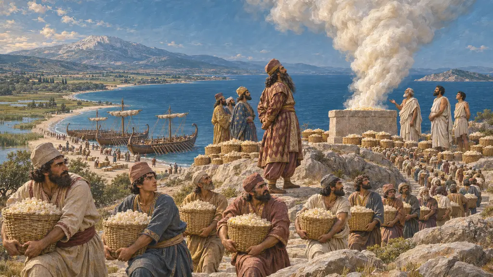
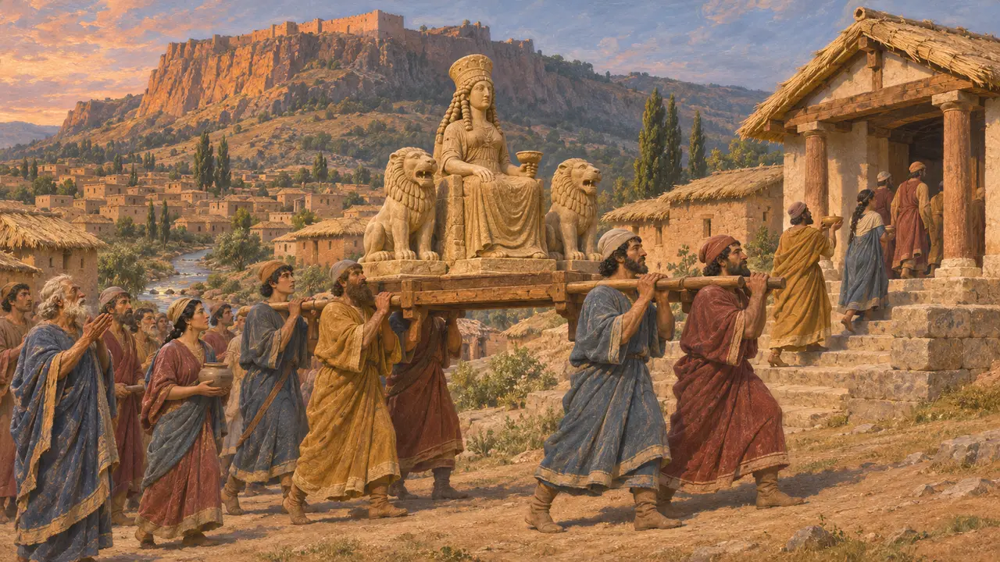
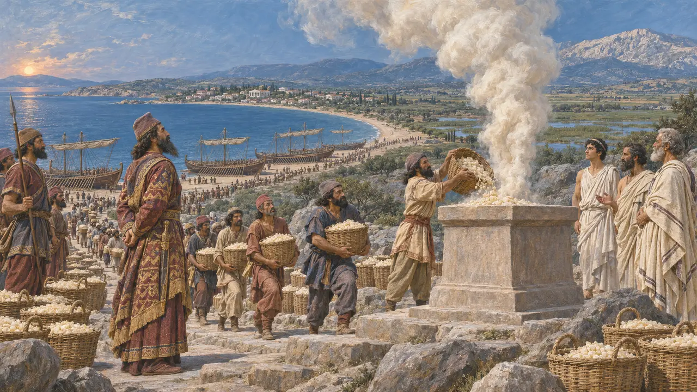
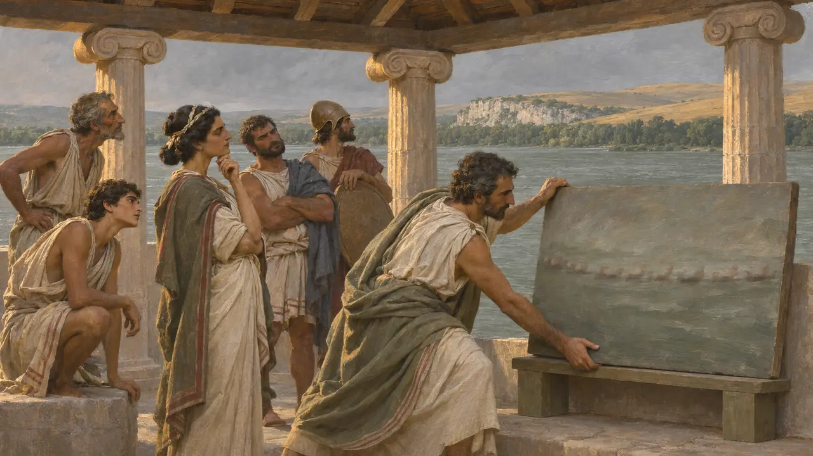
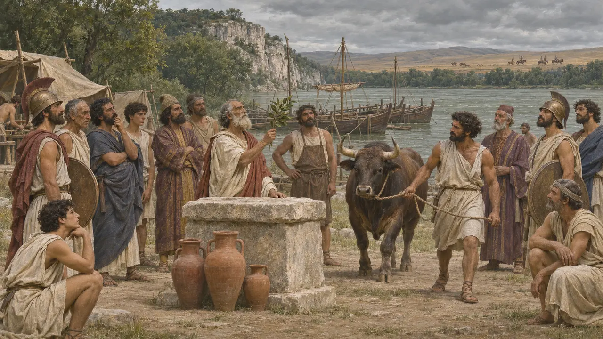

Greek and Lydian gods
Burned, spared and paid for
The King's dealings with Greek gods were all over the map: Datis burned incense to Apollo on Delos and spared the island; Darius's generals burned Didyma; Xerxes burned the Acropolis and sent exiles up the next day to sacrifice.
ゲームでは： Ionians and Greeks in the King's service want their own shrine and feast. The Temple of Cybebe at Sardis is the main temple there.

Cybebe at Sardis
古代の記述The Ionians burned the temple of the local goddess Cybebe with the lower town in 498 BCE. Herodotus says the Persians later gave it as their reason for burning Greek temples. No Lydian calendar survives, so her feast here and its date are the game's own.
Herodotus 5.102

Delos and Didyma
古代の記述Datis told the people of Delos to come home, unharmed, and burned 300 talents of frankincense on Apollo's altar. Four years before, after Lade, the temple of Apollo at Didyma was plundered and burned. The same god, treated differently by the same empire, according to who had rebelled.
Herodotus 6.97, 6.19

The Gadatas letter
係争中A Greek inscription from Magnesia has Darius scold a governor for taxing Apollo's sacred gardeners. It is often quoted as proof of Persian respect for Greek cults. Briant and others now think it probably a forgery of the Roman period, written by a temple to prove its privileges, so we don't use it.
Briant 2003; Iranica, "Achaemenid royal communication"

Acanthus's hero
古代の記述When Artachaees, the giant Persian who oversaw the Athos canal, died at Acanthus, Xerxes gave him a great funeral, and the Acanthians, told by an oracle, sacrificed to him as a hero and called on him by name. Persian and Greek practice could meet in strange ways.
Herodotus 7.117
出典
- Herodotus 5-7
- Briant 2002, From Cyrus to Alexander
- Briant 2003